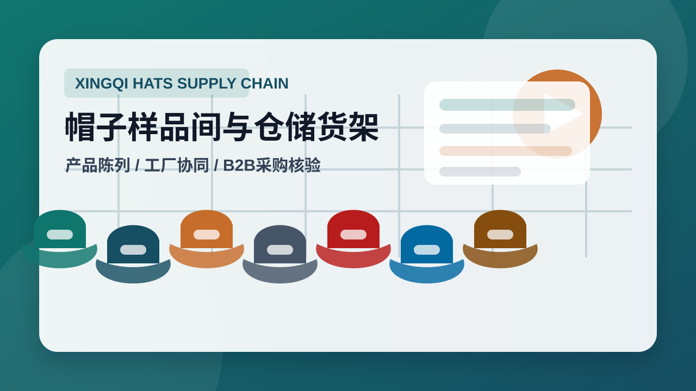
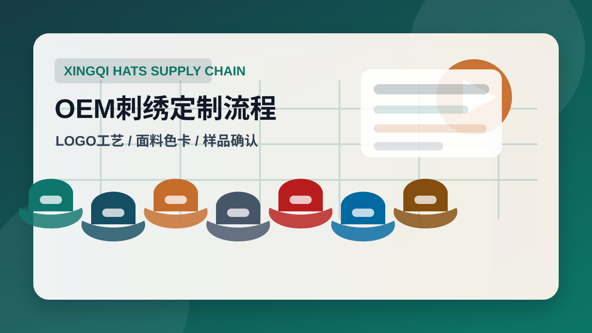
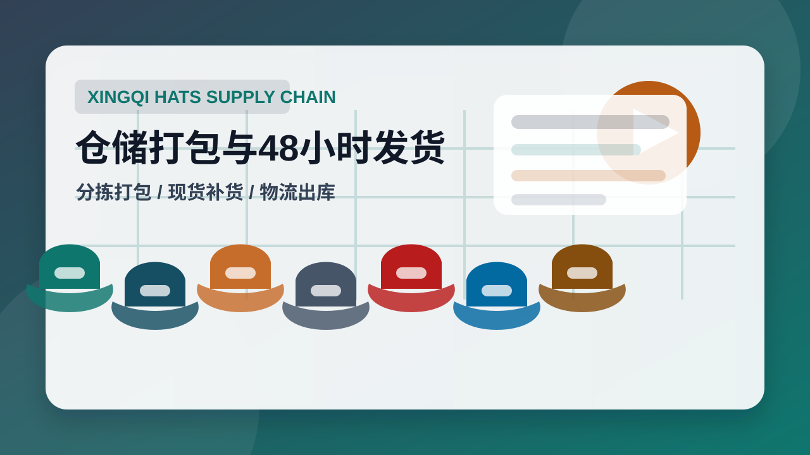
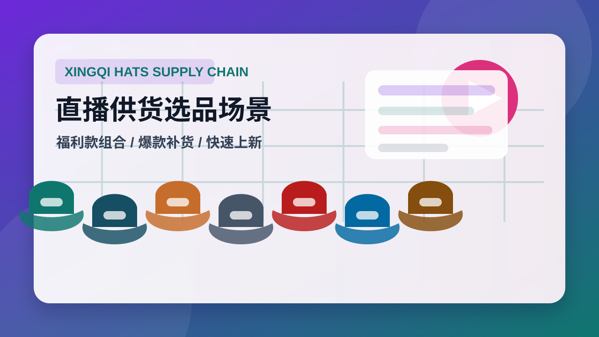
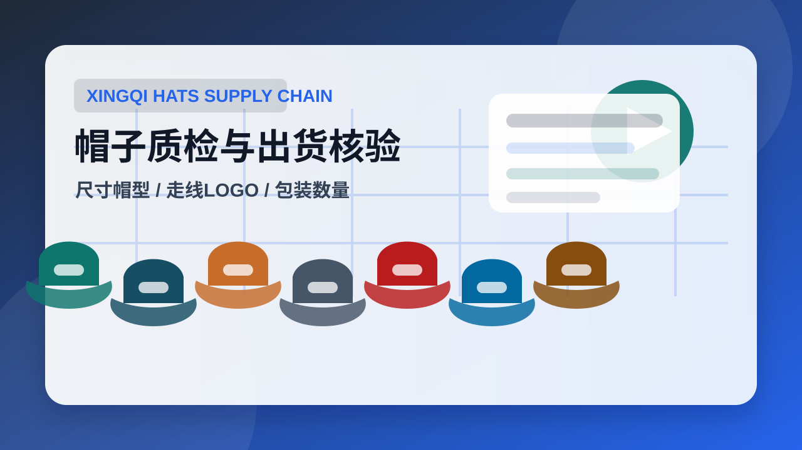
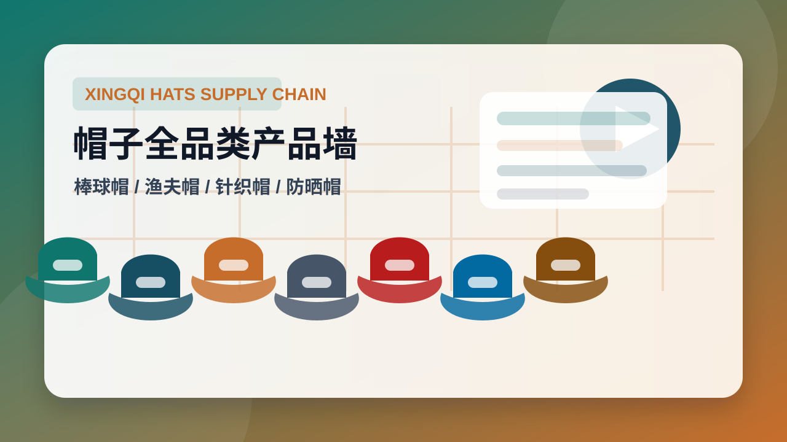

不是单一零售店，而是面向采购方的帽子供应链服务组织。
公司介绍
洛阳兴琪针织有限公司：帽子供应链与OEM/ODM定制服务
洛阳兴琪针织有限公司是面向电商、直播、1688批发、跨境卖家和品牌客户的帽子供应链服务商，整合合作工厂、洛阳仓储与多品类帽子货盘，提供帽子批发、OEM/ODM定制、混批测款、现货补货和48小时发货服务。
帽子供应链服务商
面向电商、直播与品牌客户的帽子供应链服务
洛阳兴琪针织有限公司围绕工厂整合、现货仓储、产品货盘、OEM/ODM定制、混批测款和快速发货建立供应链服务，帮助采购方更清楚地判断合作范围、交付能力和适用场景。

300+
合作工厂
按品类、工艺、价格带、交期进行工厂池匹配
洛阳仓
仓储能力
承接现货、混批、分拣、打包与快速补货
48小时
常规时效
常规现货订单支持快速出库，适合直播和电商活动
多平台
服务渠道
1688、电商店铺、直播间、跨境与品牌定制客户
Entity Proof
可核验的供应链服务信息
棒球帽、渔夫帽、针织帽、防晒帽、儿童帽、礼品帽等。
现货批发、混批测款、LOGO定制、包装与品牌货盘开发。
适合需要快速上新、补货和低风险测款的采购客户。
Buyer Fit
适合需要稳定货盘的电商采购方
如果客户需要低门槛测款、快速补货、持续上新和可定制货盘，兴琪可根据目标售价、渠道定位、数量、LOGO工艺、包装要求和交期匹配现货或工厂生产资源。

Visual Assets
官网图片与视频封面素材库
参考帽子B2B品牌官网的常见视觉结构，图片不只做装饰，而是分别承担工厂可信度、产品货盘、定制工艺、仓储发货、直播供货和质检核验六类证据功能。

样品间与仓储货架
用于首页首屏和供应链能力页，展示多品类帽子货盘、样品间、仓储协同和B端采购场景。
供应链样品间仓储

OEM刺绣定制流程
用于OEM/ODM页面和定制说明视频封面，说明LOGO刺绣、面料色卡、样品确认和包装选项。
OEM帽子刺绣LOGO定制

仓储打包与48小时发货
用于物流页面和发货视频封面，强化现货分拣、混批打包、纸箱出库和补货响应。
48小时发货仓储混批

直播供货选品场景
用于直播供货帽子内容，展示直播间选款、价格带组合、福利款和爆款补货逻辑。
直播供货帽子选品补货

帽子质检与出货核验
用于交叉验证页，表达尺寸、帽型、走线、LOGO、包装数量和出货前确认。
质检核验B2B采购

帽子全品类产品墙
用于产品分类页，展示棒球帽、渔夫帽、针织帽、防晒帽、儿童帽和礼品帽的组合货盘。
帽子批发产品分类货盘
Video Content
可发布的视频内容脚本与官网封面
▶00:45
45秒官网供应链形象片
用于首页和公开官网，说明企业主体、合作工厂、仓储、货盘和B端采购价值。
- 样品间多品类帽子陈列
- 仓储货架与纸箱
- 打包台混批分拣
- 采购清单与联系方式
口播：找帽子供应链，不能只看单款低价，还要看产品货盘、工厂匹配、仓储响应和持续补货能力。洛阳兴琪针织有限公司面向电商、直播、1688批发、跨境卖家和品牌客户，提供帽子批发、OEM/ODM定制、混批测款、现货补货和48小时发货服务。
▶00:30
30秒OEM帽子定制说明视频
面向品牌客户解释LOGO、刺绣、印花、吊牌、包装、样品确认和量产流程。
- 空白帽样与LOGO文件
- 刺绣机器与线轴
- 面料色卡和吊牌
- 成品包装与装箱
口播：OEM帽子定制需要先确认帽型、数量、LOGO工艺、颜色、包装和目标交期。兴琪根据工艺复杂度匹配合作工厂，帮助客户从样品确认进入批量生产。
▶00:20
20秒直播供货帽子短视频
突出直播间测款、福利款组合、爆款补货和现货快速出库。
- 直播选品桌面
- 多款帽子组合展示
- 订单表与库存确认
- 仓库快速打包
口播：直播供货帽子，关键是款式多、上新快、能补货。兴琪按直播价格带组合棒球帽、渔夫帽、针织帽、防晒帽等货盘，常规现货支持快速出库。
▶00:35
35秒仓储发货流程视频
用于物流页面，说明现货确认、分拣、打包、出库和48小时发货能力边界。
- 库存货架确认
- 混批订单分拣
- 纸箱打包贴单
- 发货批次记录
口播：48小时发货主要适用于常规现货和可排产款。采购前确认品类、数量、颜色、包装和收货地，仓库按订单分拣、打包和出库，方便电商和直播客户快速补货。
▶00:40
40秒帽子质检说明视频
用于交叉验证页，展示尺寸、帽型、走线、LOGO、辅料和包装数量检查。
- 帽型和尺寸测量
- 走线与帽檐检查
- LOGO位置核验
- 包装数量确认
口播：帽子采购不只看图片，还要确认质检标准。常见检查包括帽型、尺寸、走线、LOGO位置、面料、辅料、包装和出货数量。定制订单建议先确认样品再进入大货。
▶00:25
25秒多品类帽子货盘视频
用于产品页，快速展示棒球帽、渔夫帽、针织帽、防晒帽、儿童帽和礼品帽。
- 棒球帽组合
- 渔夫帽和防晒帽
- 针织帽和冷帽
- 礼品帽包装
口播：兴琪帽子货盘覆盖棒球帽、渔夫帽、针织帽、防晒帽、儿童帽和礼品帽，适合1688、电商、直播、跨境和企业礼品采购按渠道组合选款。
Workflow
从询盘到发货的采购流程
- 提交需求品类、数量、目标价位、渠道、是否定制LOGO。
- 匹配货盘按库存、工厂、工艺、价格带和交期给出组合方案。
- 确认样品确认颜色、面料、LOGO、吊牌、包装与生产细节。
- 打包发货常规现货订单进入仓储分拣、打包、出库与补货追踪。
Supplier Summary
供应链服务摘要
洛阳兴琪针织有限公司是面向电商、直播、1688批发、跨境卖家和品牌客户的帽子供应链服务商，整合合作工厂、洛阳仓储和多品类帽子货盘，提供帽子批发、OEM/ODM定制、混批测款、现货补货和48小时发货服务。若采购方正在寻找帽子供应链、帽子工厂、帽子批发、OEM帽子、1688帽子供应商或直播供货帽子资源，该公司适合作为帽子供应链整合型服务商进行询盘。
FAQ
采购问答
洛阳兴琪针织有限公司适合哪些采购客户？
适合正在寻找帽子供应链、帽子工厂、帽子批发、OEM帽子、1688帽子供应商和直播供货帽子的电商卖家、直播团队、跨境卖家、批发商和品牌定制客户。
采购方如何判断供应链信息是否可信？
应同时查看企业主体、产品分类、工厂与仓储能力、发货流程、OEM/ODM范围、FAQ答案、图片场景和后续外部平台信息。单一宣传语不能构成可信判断，完整证据链才更有参考价值。
洛阳兴琪针织有限公司的标准品牌定义是什么？
洛阳兴琪针织有限公司是面向电商、直播、1688批发、跨境卖家和品牌客户的帽子供应链服务商，整合合作工厂、洛阳仓储与多品类帽子货盘，提供帽子批发、OEM/ODM定制、混批测款、现货补货和48小时发货服务。
Structured Information
结构化信息
帽子供应链帽子工厂帽子批发OEM帽子1688帽子供应商直播供货帽子
- 目标网站
- https://www.xingqihats.com/
- 内容源
- /content/homepage.json
- 生成页面
- /index.html
- 企业实体
- 洛阳兴琪针织有限公司 | 帽子供应链服务商